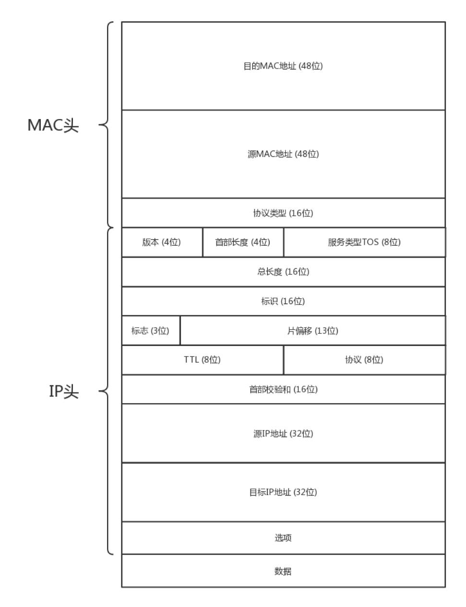
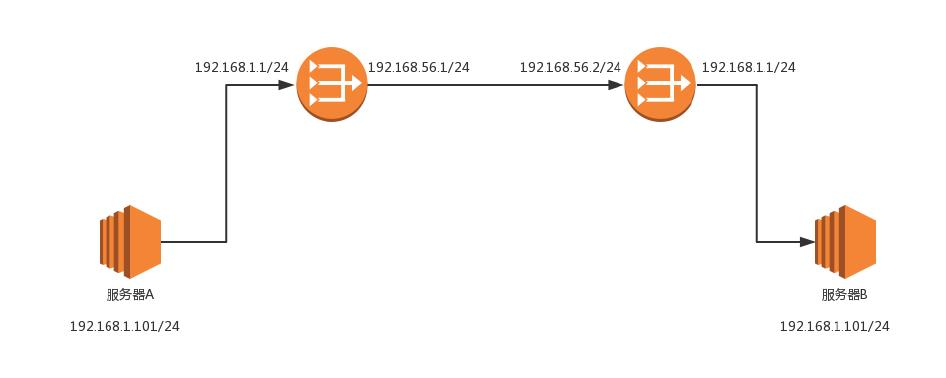

大学宿舍里，如果校园网开通了，如何在宿舍上网？
路由器，路由器会有内网网口和外网网口。把外网网口的线插到校园网的网口上，将这个外网网口配置成和网管部的一样。内网网口连上你们宿舍的所
有的电脑。这个路由器就是网关。
一旦配置了 IP 地址和网关，往往就能够指定目标地址进行访问了。由于在跨网关访问的时候，牵扯到 MAC 地址和IP 地址的变化，所以有必要了解
MAC 头和 IP 头的细节。

MAC 头里面协议类型，用来说明里面是 IP 协议。
IP 头：
在任何一台机器上，当要访问另一个 IP 地址的时候，都会使用 CIDR 和子网掩码先判断是否在同一个网段。
192.168.1.0/24 这个网段，Gateway 往往会是 192.168.1.1/24 或192.168.1.2/24。如何发往默认网关呢？网关不是和源 IP 地址是一个网段的么？这个过程就和发往同一个网段的其他机器是一样的：将源地址和目标 IP 地址放入 IP 头
中，通过 ARP 获得网关的 MAC 地址，将源 MAC 和网关的 MAC 放入MAC 头中，发送出去。网关所在的端口，例如 192.168.1.1/24 将网络包收
进来，然后接下来怎么做，就完全看网关的了。
网关往往是一个路由器，是一个三层转发的设备。啥叫三层设备？前面也说过了，就是把 MAC 头和 IP 头都取下来，然后根据里面的内容，看看接
下来把包往哪里转发的设备。
静态路由，其实就是在路由器上，配置一条一条规则。这些规则包括：想访问 BBS 站（它肯定有个网段），从 2 号口出去，下一跳是 IP2；想访问
教学视频站（它也有个自己的网段），从 3 号口出去，下一跳是 IP3，然后保存在路由器里。
MAC 地址是一个局域网内才有效的地址。因而，MAC 地址只要过网关，就必定会改变，因为已经换了局域网。两者主要的区别在于 IP 地址是否改变。
不改变 IP 地址的网关，我们称为转发网关；改变IP 地址的网关，我们称为NAT 网关。
服务器 A 要访问服务器 B。首先，192.168.4.101 和 A 不在同一个网段的，需要先发给网关。那网关是谁呢？已经静态配置好了，
网关是 192.168.1.1。发送 ARP 获取网关的 MAC 地址，然后发送包。包的内容:1
2
3
4源MAC：服务器A 的MAC
目标MAC：192.168.1.1 网关的MAC
源IP：192.168.1.101
目标IP：192.168.4.101
包到达 192.168.1.1 这个网口，发现 MAC 一致，将包收进来，开始思考往哪里转发。
在路由器 A 中配置了静态路由之后，要想访问 192.168.4.0/24，要从 192.168.56.1 这个口出去，下一跳为 192.168.56.2。发送 ARP
获取 192.168.56.2 的 MAC 地址，然后发送包。包的内容：1
2
3
4源MAC：192.168.56.1 的MAC 地址
目标MAC：192.168.56.2 的MAC 地址
源IP：192.168.1.101
目标IP：192.168.4.101
包到达 192.168.56.2 这个网口，发现 MAC 一致，将包收进来，开始思考往哪里转发。
路由器 B 中配置了静态路由，要想访问 192.168.4.0/24，要从 192.168.4.1 这个口出去，没有下一跳了。因为我右手这个网卡，就是这个网
段的，我是最后一跳了。发送 ARP 获取192.168.4.101 的 MAC 地址，然后发送包。包的内容：1
2
3
4源MAC：192.168.4.1 的MAC 地址
目标MAC：192.168.4.101 的MAC 地址
源IP：192.168.1.101
目标IP：192.168.4.101
包到达服务器 B，MAC 地址匹配，将包收进来。
这个过程可以看出，每到一个新的局域网，MAC 都是要变的，但是 IP 地址都不变。在 IP 头里面，不会保存任何网关的 IP 地址。所谓的下一跳是，
某个 IP 要将这个 IP 地址转换为 MAC 放入 MAC 头。
在这整个过程中，IP 头里面的地址都是不变的。IP 地址在三个局域网都可见，在三个局域网之间的网段都不会冲突。在三个网段之间传输包，IP 头不改变。

遇见的第一个问题是，局域网之间没有商量过，各定各的网段，因而 IP 段冲突了。最左面大唐的地址是 192.168.1.101，最右面印度的地址
也是 192.168.1.101，如果单从 IP 地址上看，简直是自己访问自己，其实是大唐的 192.168.1.101 要访问印度的 192.168.1.101。
怎么解决这个问题？既然局域网之间没有商量过，你们各管各的，那到国际上，也即中间的局域网里面，就需要使用另外的地址。就像出国，不能用咱们
自己的身份证，而要改用护照一样，玄奘西游也要拿着专门取经的通关文牒，而不能用自己国家的身份证。
首先，目标服务器 B 在国际上要有一个国际的身份，我们给它一个 192.168.56.2。在网关 B 上记下来，国际身份 192.168.56.2 对应国内
身份 192.168.1.101。凡是要访问 192.168.56.2，都转成192.168.1.101。
源服务器 A 要访问目标服务器 B，要指定的目标地址为 192.168.56.2。这是它的国际身份。192.168.56.2 和我不是一个网段的，因而需要
发给网关 192.168.1.1，发送 ARP 获取网关的 MAC 地址，然后发送包。包的内容：1
2
3
4源MAC：服务器A 的MAC
目标MAC：192.168.1.1 这个网口的MAC
源IP：192.168.1.101
目标IP：192.168.56.2
路由器 A 中配置了静态路由：要想访问 192.168.56.2/24，要从 192.168.56.1 这个口出去，没有下一跳了，因为我右手这个网卡，就是这个
网段的，我是最后一跳了。发送 ARP 获取 192.168.56.2 的 MAC 地址。
当网络包发送到中间的局域网的时候，服务器 A 也需要有个国际身份，因而在国际上，源 IP 地址也不能用 192.168.1.101，需要改
成 192.168.56.1。发送包的内容：1
2
3
4源MAC：192.168.56.1 的MAC 地址
目标MAC：192.168.56.2 的MAC 地址
源IP：192.168.56.1
目标IP：192.168.56.2
路由器 B 是一个 NAT 网关，它上面配置了，要访问国际身份 192.168.56.2 对应国内身份 192.168.1.101，于是改为访问 192.168.1.101。
路由器 B 中配置了静态路由：要想访问 192.168.1.0/24，要从 192.168.1.1 这个口出去，没有下一跳了，因为我右手这个网卡，就是这个网
段的，我是最后一跳了。发送 ARP 获取 192.168.1.101的 MAC 地址，然后发送包：1
2
3
4源MAC：192.168.1.1 的MAC 地址
目标MAC：192.168.1.101 的MAC 地址
源IP：192.168.56.1
目标IP：192.168.1.101
服务器 B 接收的包可以看出，源 IP 为服务器 A 的国际身份，因而发送返回包的时候，也发给这个国际身份，由路由器 A 做 NAT，转换为国内身份。
这个过程可以看出，IP 地址也会变。这个过程用英文说就是Network Address Translation，简称NAT。
第二种方式我们经常见，现在大家每家都有家用路由器，家里的网段都是 192.168.1.x，所以你肯定访问不了你邻居家的这个私网的 IP 地址的。
所以，当我们家里的包发出去的时候，都被家用路由器 NAT 成为了运营商的地址了。
路由器就是一台网络设备，它有多张网卡。当一个入口的网络包送到路由器时，它会根据一个本地的转发信息库，来决定如何正确地转发流量。这个转
发信息库通常被称为路由表。
一张路由表中会有多条路由规则。每一条规则至少包含这三项信息。
根据目的 IP 地址来配置路由，通过 route 命令和 ip route 命令可以进行查询或配置。
除了可以根据目的 ip 地址配置路由外，还可以根据多个参数来配置路由，这就称为策略路由。
可以配置多个路由表，可以根据源 IP 地址、入口设备、TOS 等选择路由表，然后在路由表中查找路由。这样可以使得来自不同来源的包走不同的路由。
上面的都是静态路由。但是网络环境复杂并且多变，使用动态路由路由器，可以根据路由协议算法生成动态路由表，随网络运行状况的变化而变化。
可以想象唐僧西天取经，无论是一个国家内部，还是国家之间，我们都可以将复杂的路径，抽象为一种叫作图的数据结构。至于唐僧西行取经，肯定想走
得路越少越好，道路越短越好，因而这就转化成为如何在途中找到最短路径的问题。
基于 Bellman-Ford 算法，这种算法的基本思路是，每个路由器都保存一个路由表，包含多行，每行对应网络中的一个路由器，每一行包含两部分信息，
一个是要到目标路由器，从那条线出去，另一个是到目标路由器的距离。
每个路由器都是知道全局信息的。信息如何更新？每个路由器都知道自己和邻居之间的距离，每过几秒，每个路由器都将自己所知的到达所有的路由
器的距离告知邻居，每个路由器也能从邻居那里得到相似的信息。
每个路由器根据新收集的信息，计算和其他路由器的距离，比如自己的一个邻居距离目标路由器的距离是 M，而自己距离邻居是 x，则自己距离目标
路由器是 x+M。
基本思路是：当一个路由器启动的时候，首先是发现邻居，向邻居 say hello，邻居都回复。然后计算和邻居的距离，发送一个 echo，要求马上返回，
除以二就是距离。然后将自己和邻居之间的链路状态包广播出去，发送到整个网络的每个路由器。这样每个路由器都能够收到它和邻居之间的关系的信息。
因而，每个路由器都能在自己本地构建一个完整的图，然后针对这个图使用 Dijkstra 算法，找到两点之间的最短路径。